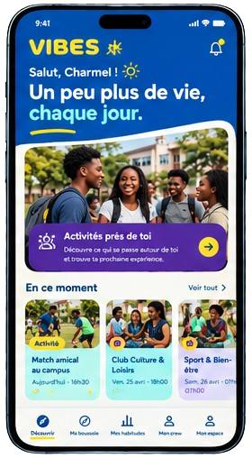
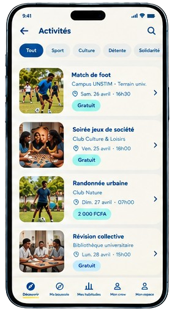
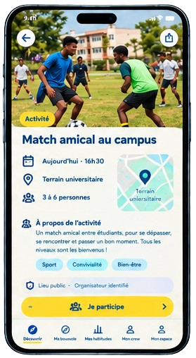
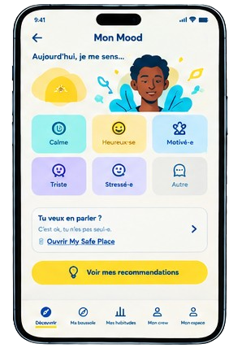
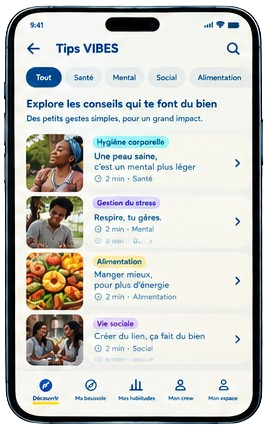
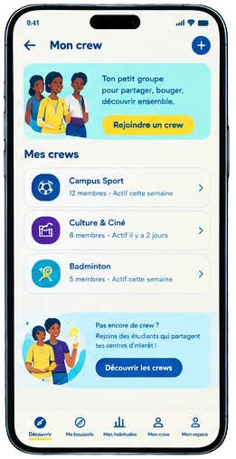

Découvrir
Retrouve des jeunes qui partagent tes passions. Explore les activités, découvre les clubs et trouve des occasions de faire le premier pas.
VIBES · Le bien-être étudiant autrement
Et si ton téléphone t'aidait à vivre davantage, plutôt qu'à rester connecté toute la journée ?
VIBES t'aide à retrouver des jeunes qui partagent tes passions, à prendre soin de toi et à construire des habitudes qui te font du bien.
En cours de conception : l'application n'est pas encore disponible au téléchargement.

Le constat
Entre les cours, les écrans et les journées qui se ressemblent, il n'est pas toujours facile de rencontrer de nouvelles personnes, de trouver des activités qui nous correspondent ou de prendre du temps pour soi.
Pourtant, une passion partagée, une activité improvisée ou une petite habitude peuvent ouvrir la porte à de nouvelles expériences.
C'est de cette idée qu'est né VIBES.
L'approche
Retrouve des jeunes qui partagent tes passions. Explore les activités, découvre les clubs et trouve des occasions de faire le premier pas.
Prends un moment pour toi, mets des mots sur ton humeur et découvre des conseils simples pour mieux prendre soin de toi.
Transforme les petites intentions en habitudes. Essaie de nouvelles activités, relève de petites Étincelles et avance à ton rythme.
Pas besoin de tout changer. Parfois, une petite action suffit pour commencer.
Le bien-être, en cinq dimensions
Le bien-être ne se résume pas à un seul aspect de notre vie. Il se construit à travers nos relations, notre corps, nos émotions, notre esprit et notre quotidien.
Créer des liens, partager ses passions et trouver sa place.
Bouger, marcher et retrouver le plaisir des activités accessibles.
Mieux comprendre ce que l'on ressent et savoir vers qui se tourner lorsqu'on en a besoin.
Prendre du recul, souffler, apprendre et créer.
Découvrir des repères simples pour mieux prendre soin de soi au quotidien.
L'expérience
De la découverte d'une activité au petit moment que l'on s'accorde pour soi, VIBES veut rendre les premiers pas plus simples.
Trouve des occasions de jouer, de créer, de bouger ou de partager une passion avec d'autres étudiants.


Avec Mon Mood et My Safe Place, découvre un espace personnel pour exprimer ton ressenti et trouver des pistes adaptées à tes besoins.

Grâce aux Étincelles, aux conseils et aux rappels doux, avance à ton rythme, sans pression ni compétition.

La technologie ouvre la porte. Les expériences se vivent dehors.
Le Crew
Un match, une marche, une séance de musique ou une nouvelle activité : parfois, il suffit de trouver quelques personnes avec qui partager le moment.
Avec le Crew, VIBES veut faciliter l'organisation des participations et aider chacun à aborder une première expérience collective plus sereinement.
Des passions en commun. Des expériences à vivre.

Nos engagements
Ce que tu partages dans ton espace personnel reste privé selon les règles prévues par VIBES.
Tu choisis les activités auxquelles tu souhaites participer et ce que tu veux partager.
Pas de compétition sur ton bien-être, pas de culpabilisation lorsque tu prends une pause.
Les événements sont soumis à une validation et les organisateurs doivent respecter les règles de sécurité prévues par le projet.
Une limite claire. VIBES est une initiative de prévention et de bien-être. Ce n'est ni un service de soins, ni un outil de diagnostic, ni un conseil médical ou psychologique.
Une passion à découvrir. Une activité à essayer. Une habitude à construire.
VIBES veut aider les étudiants à faire davantage de place à ce qui leur fait du bien.
Découvrir notre vision